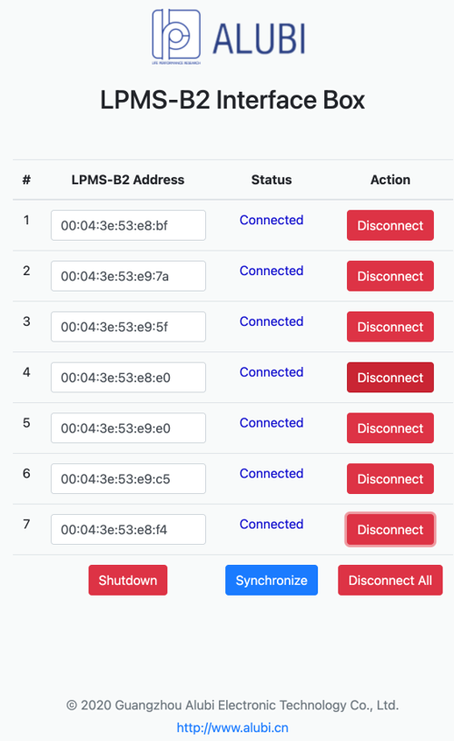

Hip Exoskeleton
Our design of quasi-direct drive actuation-based exoskeleton demonstrates mechanical versatility for being lightweight (3.2 kg overall mass), compliant (backdrivable) with high torque (36 Nm) and high control bandwidth.

Specifications

Architecture of Sensor, Communication, Control
The electronic architecture of the exoskeleton facilitated high-level torque control, motor control, sensor signal conditioning, data communication, and power management.

RaspberryPi Board Setup
On the computer, look for a WiFi network named "raspberrypiAPXX", which should appear within one minute after power on. Connect to the network and enter "raspberrypi" as the password. Go to the web browser and enter this address: 192.168.12.1:8080. You would see the following webpage to manage the IMU connections. Enter the MAC address of each of the IMU sensors you wish to be connected to the board, and click the "Connect" button next to it. The status will change to "Connected" once the IMU is connected to the board and you will see the breathing light on the IMU. After entering the MAC address of all the IMUs and connecting to them successfully, click the "Shutdown" button to save the configurations to the board and shutdown the board. Unplug the power cable and plug in the power cable again to reboot the RaspberryPi board. RaspberryPi board setup is now complete.
Video
Publication
Yu S, Huang TH, Yang X, Jiao C, Yang J, Chen Y, Yi J, Su H. "Quasi-Direct Drive Actuation for a Lightweight Hip Exoskeleton with High Backdrivability and High Bandwidth", IEEE/ASME Transactions on Mechatronics, vol. 25, no. 4, pp. 1794-1802, Aug. 2020, doi: 10.1109/TMECH.2020.2995134.
PDF
| Video